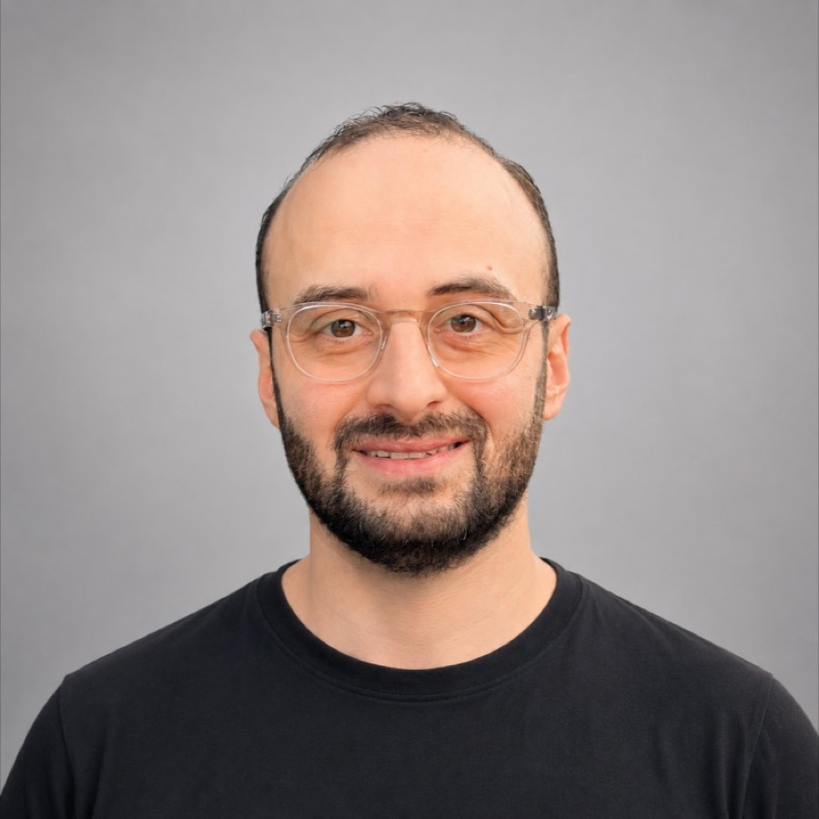
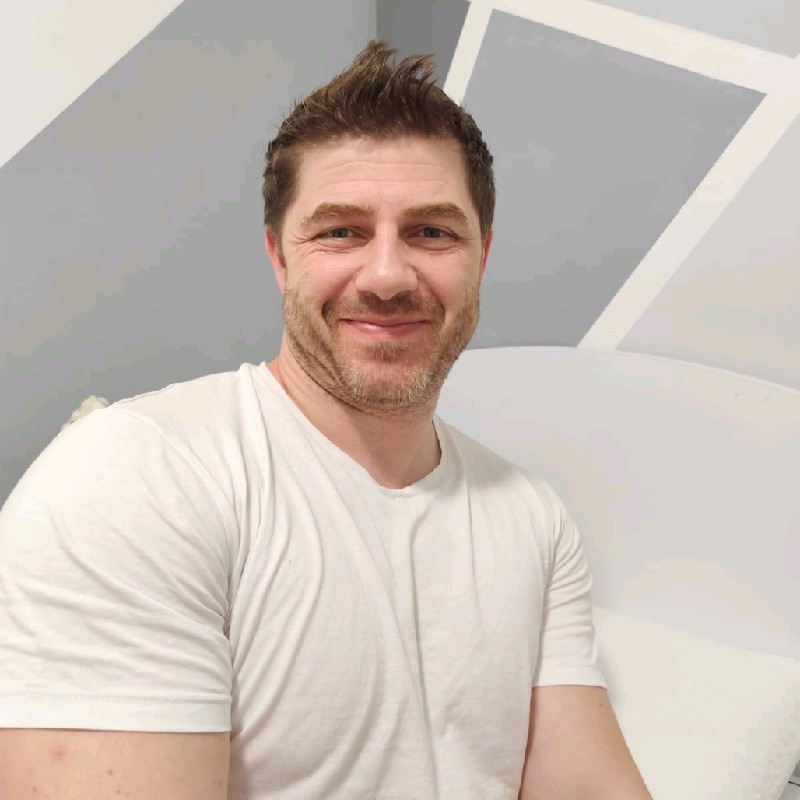
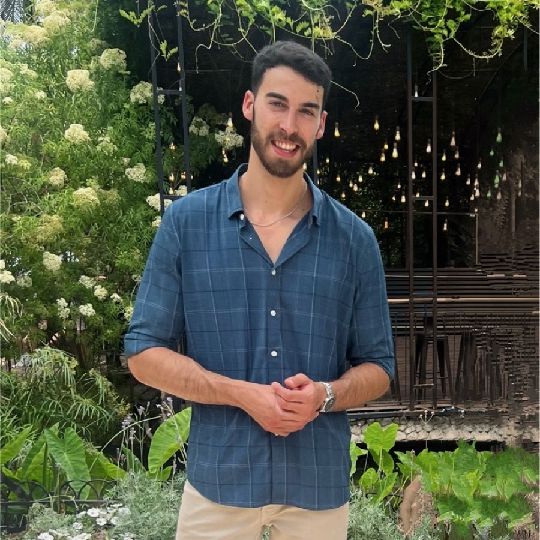
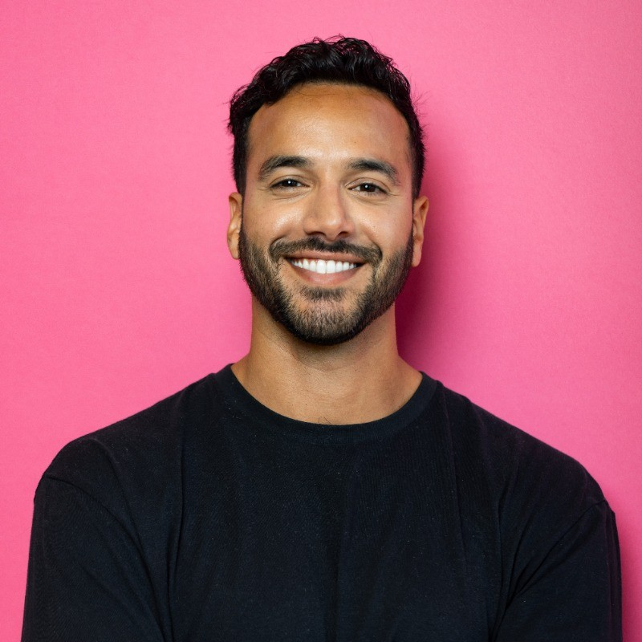
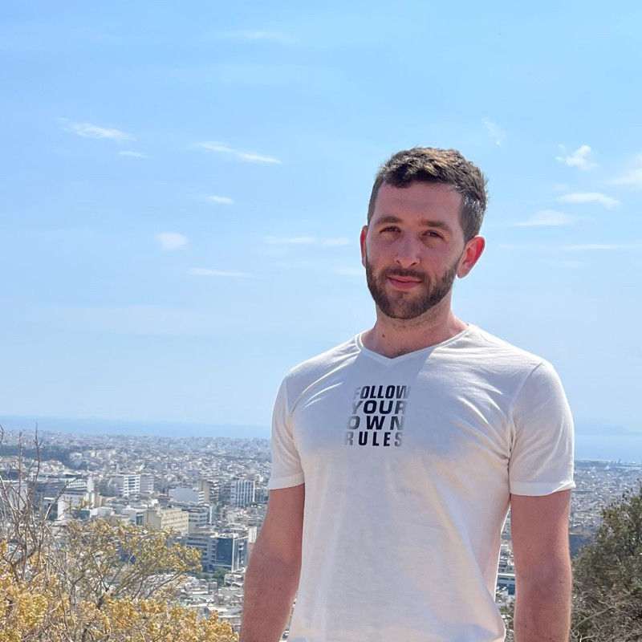

Deploy #04
Using AI to Hack Growth / Jul 29
102 BUILDERS / TLVUsing AI to Hack Growth / Jul 29
If you’re building with AI in Tel Aviv, you should probably know the other people doing it.
Events. Weekly coworking. People actually making things.
The events are the big nights. Coworking is where the community keeps moving.
Every week, we take over a room in Tel Aviv and work next to each other. Bring something you want to move forward. Leave having moved it forward.
Coffee, laptops, unfinished ideas, quick feedback, and people actually getting things done.
Every few weeks, we put one useful question in front of the room. A few people show what actually worked. Then everyone else takes it from there.
You don’t need a pitch deck. You do need to be making something. Founders, engineers, designers, operators — the mix is the point.

INBOX ZERO / FOUNDER

F5 / PRINCIPAL SOFTWARE ENGINEER
OFFTHERADAR.AI / FOUNDER

EXPLORIUM / TECH LEAD
HADIGITALIT / FOUNDER

TEAM8 / EMBERNOVELS

SAILPOINT / NEMUS
MEDIDA / FOUNDING ENGINEER
SWAN / FOUNDING GTM ENGINEER
Builds Inbox Zero, an open-source AI email assistant that cleans out and automates your inbox. Two decades shipping from Tel Aviv — before this he grew Draft Fantasy to a quarter of a million signups while serving in the IDF.
Not case studies. Not demo-day slides. Just things people in Deploy are actually working on.
BUILD_001Open-source AI email assistant that empties your inbox.
BUILD_002Bloomberg terminal for Bitcoin.
BUILD_003Prompts into go-to-market pipeline.
BUILD_004AI headhunting agent for executive search.
BUILD_005Applied AI against real attack surface.
BUILD_006Buyer intelligence for go-to-market teams.
BUILD_007Post-quantum micro-segmentation overlay network.
BUILD_008Computer vision on the factory floor.
BUILD_009Every recipe you own, digitized.
BUILD_010Bootstrapped web and product studio.
BUILD_011The identity layer for fundraising.
BUILD_012AI-assisted personal autobiographies.
BUILD_013AI agent for Amazon store operators.
BUILD_014Long-form turned into short clips.
BUILD_015AI podcast summaries by email.
BUILD_016Self-portrait studio and automation tools.
BUILD_017AI automation consulting.
BUILD_018School CRM plus AI teacher matching.
BUILD_019Interactive Torah portion learning.
BUILD_020Jewish migration, visualized.
BUILD_021Code output into LinkedIn and X posts.
Sometimes people show what they built. Sometimes they break down what worked. A few people kick things off. Then the room takes over.
We kept needing tools that didn’t exist, so we started making them.
We work with companies, venues and communities that want to reach people actually building with AI in Tel Aviv.
Partner with Deploy →
The easiest way to understand Deploy is to be in the room.
Join the community →